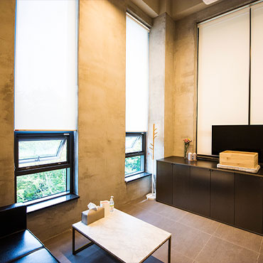
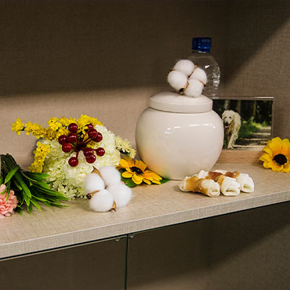
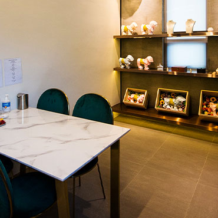
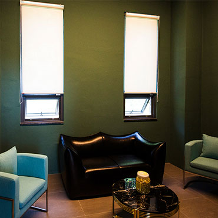
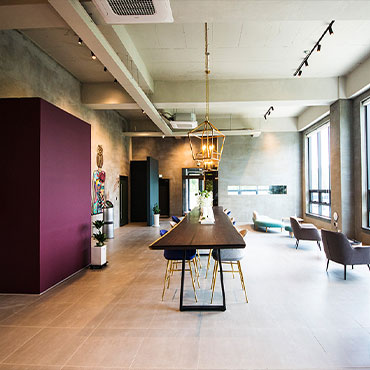
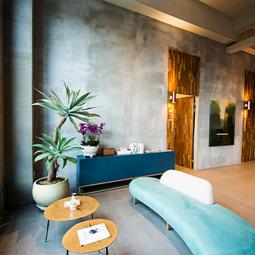
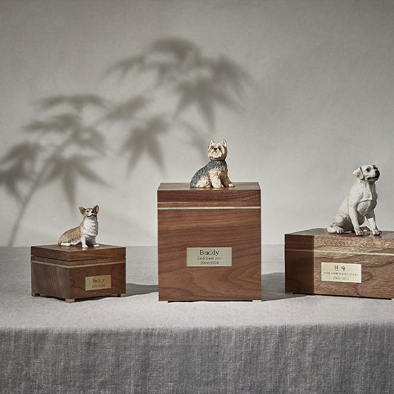
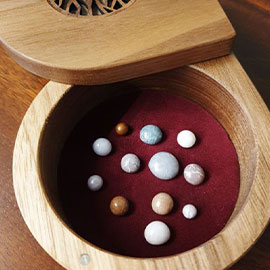
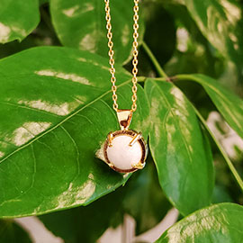

‘statice의 꽃말은 영원한 사랑으로 아이와의 추억은 영원히 우리들 마음에 간직 될 것입니다.’
반려동물 장례식장 STARTICE는 반려동물과의 이별을 나타내는 상징적인 표현인 ‘별이되다’라는 말 속 star(별)와, 영원한 사랑이라는 꽃말의 꽃 statice 꽃을 합쳐 별이 된 아이와의 추억이 영원히 마음 속에 간직되기를 바라는 저희의 마음을 담았습니다.






별이 된 아이들이 편히 쉴 수 있도록 장례지도사의 관리 하에 최적의 환경을 유지합니다. 보호자님들께서는 아이들이 떠오를 때 언제든 방문하셔서 편하게 추억하며 쉬실 수 있는 공간입니다.
STARTICE는_
매 순간 진심을 다해 아이의 마지막 소풍을 배웅합니다.
01
정식등록 업체
저희 스타티스는 국가에서 정식적 으로 허가 . 등록된 업체로서 국내 최상의 서비스와 시설으로 언제나 정성을 다해 모시겠습니다.More
02
함께하는 장례
모든 장례절차를 보호자님이 직접 참관하실 수 있으며, 전문 장례지도사가 배정되어 일대일 맞춤 서비스가 진행됩니다.More
03
픽업 서비스
편안한 이별 준비를 위해 전문 장례지도사가 전용 차량으로 아이와 보호자님을 모시러 갑니다. 24시간 이용 가능 합니다.More
04
사진인화 서비스
보호자님을 위해 아이와의 소중한 추억이 담긴 사진을 인화하여 아이와 보호자님의 곁에 놔드리고 싶은 마음에 시작하게 되었습니다.More
Nobel Stone
노블스톤은 가장 순수하게, 가장 가치있게, 영원히 함께 할 수 있는 최고의 가치를 만듭니다 .



노블 NOBLE : 고귀한, 숭고한아이의 유골분을 스톤으로 제작하여 드리는 서비스입니다 . 특허받은 기술로 다른 첨가물이 섞이지 않은 순도 99.99%의 스톤을 제작하여 보호자님이 아이를 변함없이 영원히 곁에 둘 수 있게 해드립니다 . 순도가 높아 변질되지 않으며, 원하실 경우 원상태의 유골로 복원이 가능합니다 .
More